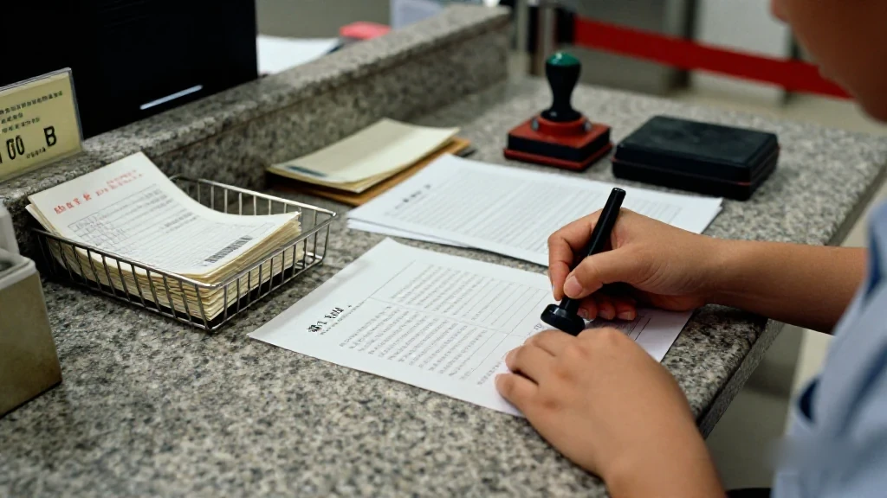
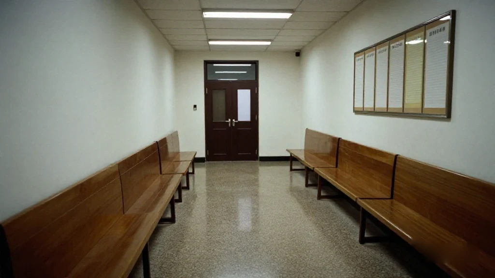
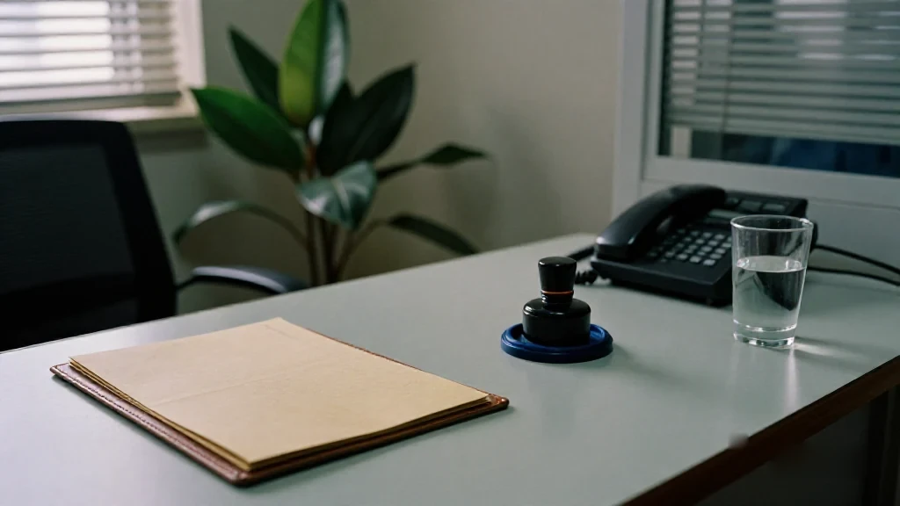

圖片由 AI輔助創作（Z-Image-Turbo）
個案資料
| 年份 | 2004 |
|---|---|
| 地點 | 廣州越秀區江灣大酒店 1511–1514 |
| 客人 | 烏干達客人 |
| 收款方式 | 中國銀行託收 |
| 匯票流程 | 一至兩個月 |
| 訴訟 | 三年 |
| 審級 | 三審 |
一、江灣大酒店 1511 至 1514

圖片由 AI輔助創作（Z-Image-Turbo）
2004年，我哋公司喺廣州越秀區江灣大酒店，1511到1514。
嗰陣生意做得非常大，日日都有筍盤。所謂筍盤，唔係等返嚟嘅，係送上門嘅——客自己搵上嚟，貨仲未入倉就已經有人落訂。
我當時三十出頭，血氣方剛，覺得生意就係咁做：有單就接，有票就收。
我哋主要做非洲客。烏干達有一個客，同我哋做開，佢唔係匯錢過嚟，佢係寄支票。一張一張咁寄。
我哋當時唔識。唔識，就照住最正路嘅做法去做：拎住張票，去中國銀行託收。
二、一兩個月，同埋每張幾十蚊
圖片由 AI輔助創作（Z-Image-Turbo）
中國銀行收我哋幾十蚊託收費。跟住張票就要行一段好長嘅路。
銀行先寄返中國銀行總行，總行再轉交美國銀行，美國銀行再打去烏干達嗰間銀行。烏干達嗰邊確認咗，錢先至落返美國銀行；美國銀行再畀中國銀行；中國銀行再叫我去拿。
成個匯票流程，差不多要一兩個月。
一兩個月，你話長唔長？喺2004年，一單生意由落訂到收錢，一兩個月係正常。所以冇人覺得有問題。
收到一張票，我哋就託收。每個月都收到十幾張。
但大部分都係假嘅。
我哋唔知。真係唔知。銀行唔會主動同你講「呢張唔得」，佢只會收你幾十蚊，然後幫你行嗰一兩個月嘅流程。行到最後，返嚟一句「呢張票唔得」。
幾十蚊，一張。十幾張一個月。你話多唔多？唔多。但問題唔係錢，問題係我哋當時根本冇一個機制去分真的同假的。
呢個就係第一個學費。唔貴，但你自己唔知你交緊。
三、突然間，銀行打電話上嚟
圖片由 AI輔助創作（Z-Image-Turbo）
然後有一次，銀行打電話嚟公司，話有一張票已經到賬，叫我過去辦手續。
我去辦。辦完之後，大概隔咗一個禮拜、兩個禮拜，銀行就幫我拿咗出嚟。
係一個烏干達客。我聯絡佢，佢話「係呀」。
咁我就喺呢邊幫佢備貨，寄過去。寄過去冇事，單證方面我都保存好。
我一直覺得呢一單係好正常嘅一單。錢到咗，貨出咗，單證收好。
好正常。
四、兩三個月之後，銀行上門

圖片由 AI輔助創作（Z-Image-Turbo）
誰知道，過咗兩三個月之後，銀行跑上嚟我哋公司，話我知：嗰張票有問題，要我把錢退返去。
我當時就諗：我點解要畀返你？
我同佢講得好清楚——
「你哋通知我，話審核過，話呢筆錢冇問題。我收到錢，我馬上就會把錢去買成貨，跟住寄畀客人。我係實實在在把錢發出去咗㗎。」
佢話唔得。
佢話，我哋只係幫你做託收，唔係幫你做業務。所以，只要張票有問題，你就要退返。
我唔肯。
後來佢哋請咗律師，上嚟公司搵我，來來回回好幾次。呢件事就咁傾咗三四個月。
三四個月之後，我睇清楚：傾唔掂。佢企硬，我又企硬。
我當時血氣方剛，我才唔管佢。我話，好，我請律師。
我把件事同律師講清楚，跟住就開始打官司。
呢個官司，就係我同中國銀行打。我同中國銀行嘅機構打。
五、三審，三年，輸兩次

圖片由 AI輔助創作（Z-Image-Turbo）
嗰陣打官司，我兩間公司。我喺海珠區提起訴訟，就係我哋剛開始嗰間公司，喺海珠區起訴。
海珠區初級法院唔敢審。中級法院都唔敢審。
就咁拖，拖拉到第三年，走去高級法院，喺黃埔大道嗰度。
高級法院有開庭。開咗第一審，判我哋輸。
判完之後，我哋律師再去全國各個地方，做更正、做公證，公證咗一批文件返嚟，準備打第二審。
第二審開到一半，退庭。
退庭之後，隔咗三四日，法院嘅人通知我哋：你哋敗訴。
我問律師：我為咩敗訴？
律師同我講：呢個係行政壓力，冇辦法。
呢句話係律師當時咁同我講嘅，我照佢原話記落嚟，唔加亦唔減。
我唔識法律，我唔敢亂講。但我知道，呢單案唔簡單。
有人同我講，話判決書好似都有存檔，後來好多涉外律師事務所都拿我哋呢單嘢做參考、做重點。呢個我就唔係好懂。我聽到就係聽到，我唔會當自己識。
六、銀行搬咗，我分三次還
法院話我哋輸，咁就願賭服輸。
我哋轉頭去搵銀行協商。但係嗰陣我哋已經打咗三四年官司。當時同我哋對接嗰個行長，係喺沿江支行嘅，佢已經走咗。佢搬去另一間銀行。
呢間銀行唔見咗。我哋就去搵，搵到佢搬咗去廣州大道北嗰邊。
我哋上返去同佢協商：而家呢筆錢，要點還？
最後我分三次還。三次就把錢還清。
其實銀行呢筆賬已經做咗壞賬。已經打落去，唔指望收得返。但我哋照樣搬錢過去還。
我當時嘅想法好簡單：法律上判我輸，我認。做生意，願賭服輸。呢筆錢我賠。
但係我心裡一直有一條刺——
票據法、匯票法，點解會咁對商人？
我收到錢，錢係真嘅，貨係真嘅，單證係真嘅，客係真嘅。到頭來，兩三個月之後可以話你唔算數。你手上嗰筆錢，唔係你嘅錢，係一筆暫借。
我唔明。我直到今日都唔完全明。
七、由嗰日開始，我只做信用證
經過呢件事之後，我一直改用信用證。我唔敢再用匯票。
原因好簡單：匯票有追溯期，而且好長好長。
信用證唔同。信用證係銀行開出嚟嘅承諾，條款寫死，單證對得上就要付。冇人兩三個月之後同你講「唔算數」。
第二個問題係，你個人同銀行打，你嘅力量太細。你公司同銀行打，你嘅力量都係太細。你冇辦法去對抗呢種東西。
嗰個年代，喺法院，有人話我聽：你呢種案例屬於涉外，係解放後全國第二單。我聽到嘅係「好似係廣東省，定係全國第二單」——我聽到忘記咗，我唔敢寫死。
但有一樣嘢我記得清清楚楚：我哋打輸咗。而我願意賠。
烏干達嗰個客，就係用匯票呢種東西嚟騙我哋。呢個我今日講得出，因為我賠過。
八、忠告：以後點收錢
我哋喺呢個過程裡面都總結出嚟。
第一，以後匯票唔再收。呢一條係死線。
第二，除非係現金支票。當地嘅現金支票，或者香港嘅現金支票，我可以收。
第三，收錢同發貨之間，要留一手。單證要保存好，唔係為咗打官司，係為咗你自己知道自己做過咩。
所以我成日同後生講：做外貿，唔係睇你賺幾多，係睇你收得返幾多。
一單生意，貨出咗、錢收唔返，你唔止蝕咗貨，你仲蝕咗時間、蝕咗精神、蝕咗信心。呢一單，我賠咗錢，貨又冇咗，人又累。
但我都喺其中學到一種經驗。
九、閱歷係喺試錯裡成長嘅
我做咗26年生意。呢26年裡面，我賺過錢，亦賠過錢。
但你問我，邊一樣教我最多？我會答你：賠錢嗰幾單。
賺錢嘅單，你只會記得你賺咗幾多。賠錢嘅單，你會記得每一個細節——對方幾時打電話、你自己幾時心軟、你邊一步冇留手。
所以我嘅忠告就係一句：
閱歷係喺試錯裡成長嘅。
你冇試錯，你冇經歷過，你就冇辦法深刻去領會到呢個理念。
你睇幾多本書、聽幾多個人講，都係隔一層。要自己賠過一次，嗰個道理先會入骨。
我唔會叫人特登去試錯，但你避唔開。你唯一可以做嘅，係試錯之後唔好逃避，攞返個教訓，然後改。
2004年那單烏干達匯票，我賠了錢，也學了乖。
Image by AI (Z-Image-Turbo)
Case facts
| Year | 2004 |
|---|---|
| Place | Jiangwan Hotel, Yuexiu District, Guangzhou — rooms 1511 to 1514 |
| Client | A Ugandan client |
| Collection | Collection through the Bank of China |
| Bill cycle | One to two months |
| Litigation | Three years |
| Instances | Three instances |
1. Rooms 1511 to 1514, Jiangwan Hotel
Image by AI (Z-Image-Turbo)
In 2004 my company was in rooms 1511 to 1514 of the Jiangwan Hotel, Yuexiu District, Guangzhou.
Business was very big then. There were bargains every day — and I mean bargains that came to us. Customers found their own way to our door, and some orders were placed before the goods had even reached the warehouse.
I was in my early thirties, hot-blooded, and I thought business was simply this: take the order, take the cheque.
Most of our customers were African. One Ugandan client had been trading with us a while, and he did not wire money. He posted cheques. One at a time.
We did not know any better. Not knowing any better, we did the most orthodox thing available: we took the cheque to the Bank of China for collection.
2. One or Two Months, and a Few Tens of Yuan a Cheque
Image by AI (Z-Image-Turbo)
The Bank of China charged us a few tens of yuan in collection fees. Then the cheque set off on a very long road.
The bank sent it back to the Bank of China head office. The head office passed it to Bank of America. Bank of America sent it on to the bank in Uganda. Once Uganda confirmed, the money came back to Bank of America; Bank of America paid the Bank of China; the Bank of China told us to come and collect.
The whole cycle took about one to two months.
Is one or two months a long time? In 2004, one to two months from order to payment was normal. Nobody thought anything of it.
We received a cheque, we sent it for collection. Every month we received a dozen or more.
Most of them were fake.
We did not know. We genuinely did not know. A bank will not ring you up and say "this one is no good" — it takes its few tens of yuan and it runs the one-to-two-month cycle for you. At the end of it, you get one line back: this cheque is no good.
A few tens of yuan each. A dozen or more a month. Is that a lot? Not really. But the money was never the problem. The problem was that we had no mechanism at all for telling a real cheque from a fake one.
That was the first tuition fee. It was not expensive. You just did not know you were paying it.
3. Then the Bank Rang the Office
Image by AI (Z-Image-Turbo)
Then one time the bank rang the office and said a cheque had cleared, and asked me to come in and complete the paperwork.
I went in and did it. About a week or two later, they released the money to me.
It was a Ugandan client. I got in touch with him and he confirmed it.
So we prepared the goods on our side and shipped them out. The shipment went off without a problem, and I kept the documents in good order.
I thought that was an entirely ordinary transaction. The money had arrived, the goods had gone out, the paperwork was filed.
Perfectly ordinary.
4. Two or Three Months Later, the Bank Came to the Office
Image by AI (Z-Image-Turbo)
Then, two or three months on, the bank turned up at our office and told me the cheque was bad. I had to return the money.
My first thought was: why on earth should I?
I put it to them plainly —
"You notified me. You reviewed it and told me the money was fine. The moment I receive money, I turn it into goods and ship them to the customer. That money went straight out again."
They said no.
They said: we only handled collection for you. We were not running your business for you. So if the cheque turns out to be bad, you have to return it.
I refused.
Eventually they instructed a lawyer, who came to the office to see me, back and forth, several times. That went on for three or four months.
After three or four months I could see it clearly: this was not going to be settled by talking. They were not moving, and neither was I.
I was hot-blooded in those days and I did not care who they were. Fine, I said. I will instruct a lawyer.
I laid the whole thing out for my lawyer, and we went to court.
That case was me against the Bank of China. Me against the institution.
5. Three Instances, Three Years, Two Losses
Image by AI (Z-Image-Turbo)
At the time I had two companies. I filed in Haizhu District, through the company we had started with, in Haizhu.
The Haizhu District primary court would not hear it. The intermediate court would not hear it either.
So it dragged, and in the third year it went up to the High Court, on Huangpu Avenue.
The High Court did sit. It heard the first instance and ruled against us.
After that ruling our lawyer travelled around the country making corrections and getting documents notarised. He came back with a stack of notarised papers and we prepared for the second instance.
The second instance was heard halfway, and then the court adjourned.
Three or four days after the adjournment, the court told us: you have lost.
I asked my lawyer: on what grounds have I lost?
My lawyer told me: this is administrative pressure. There is nothing to be done.
That is what my lawyer said to me at the time. I have set it down in his words, without adding to it or taking from it.
I do not know law, and I will not pretend to. But I do know that this case was not a simple one.
I have been told that a copy of the judgment is on file somewhere, and that a good many foreign-related law firms later used our case as a reference and as a case study. That part is beyond me. I heard it, and I am reporting only that I heard it.
6. The Bank Had Moved; I Repaid in Three Instalments
The court said we had lost, so we took the loss like men.
We went back to the bank to negotiate. But by then we had been in litigation for three or four years. The branch manager we had dealt with had been at the Yanjiang branch, and he had left. He had moved to another bank.
That bank was gone from where it had been. So we went looking, and we found it had moved to the Guangzhou Avenue North area.
We went to them to negotiate: this money, how do we repay it?
In the end I repaid it in three instalments. Three payments and it was cleared.
In truth the bank had already written that account off as a bad debt. It had been written down; nobody expected to recover it. We still moved the money over and paid it back.
My thinking was very simple. Legally I had lost, and I accepted that. In business you take your losses. I would pay.
But I have carried a splinter in me ever since —
Why does the law on negotiable instruments, the law on bills of exchange, treat merchants this way?
I had received the money. The money was real, the goods were real, the documents were real, the customer was real. And two or three months later I could be told that none of it counted. The money in your hand is not your money. It is a loan you have not agreed to.
I do not understand it. To this day I do not fully understand it.
7. From That Day On, Letters of Credit Only
After that business I moved to letters of credit and stayed there. I did not dare use bills of exchange again.
The reason is simple: a bill of exchange has a look-back period, and it is very, very long.
A letter of credit is different. It is an undertaking issued by a bank, the terms are fixed in writing, and if the documents match, payment follows. Nobody comes back two or three months later and says it does not count.
The second problem is this. If you fight a bank as an individual, you are far too small. If you fight a bank as a company, you are still far too small. There is no matching that kind of force.
In those years, in that courtroom, someone told me this case counted as foreign-related and was the second such case in the country since Liberation. What I actually heard was "either Guangdong Province or the whole country, the second case" — I have forgotten which, and I will not write it down as certain.
One thing I remember perfectly clearly: we lost. And I was willing to pay.
That Ugandan client used a bill of exchange to cheat us. I can say that today because I am the one who paid for it.
8. The Advice: How to Take Payment From Now On
We drew our conclusions out of that whole business.
First, no more bills of exchange. That line does not move.
Second, cashier's cheques are the exception. A local cashier's cheque, or a Hong Kong cashier's cheque, I will accept.
Third, leave yourself a margin between receiving payment and shipping goods. Keep your documents in order — not so that you can litigate, but so that you know what you actually did.
So I tell young people this all the time: in export trade, it is not how much you earn that matters. It is how much you actually collect.
Ship the goods and fail to collect, and you have not just lost the goods. You have lost the time, the energy and the confidence. On this one I lost the money, I lost the goods and I wore myself out.
But I also took a kind of experience out of it.
9. Experience Grows Out of Trial and Error
I have been in business for twenty-six years. In those years I have made money and I have lost money.
But ask me which taught me more, and I will tell you: the ones where I lost.
On a profitable deal you remember how much you made. On a losing deal you remember every detail — when they called, when you went soft, which step you left uncovered.
So my advice comes down to one line:
Experience grows out of trial and error.
If you have never been through it, if you have never made the mistake yourself, you cannot grasp the idea in any deep way.
However many books you read, however many people you listen to, it stays one layer away. You have to have paid for it once yourself before the lesson gets into the bone.
I would not tell anyone to go out and make mistakes on purpose, but you cannot avoid them. The only thing you control is what you do afterwards: do not run from it, take the lesson back, and change.
The Uganda bill of exchange in 2004 cost me money. It also taught me sense.